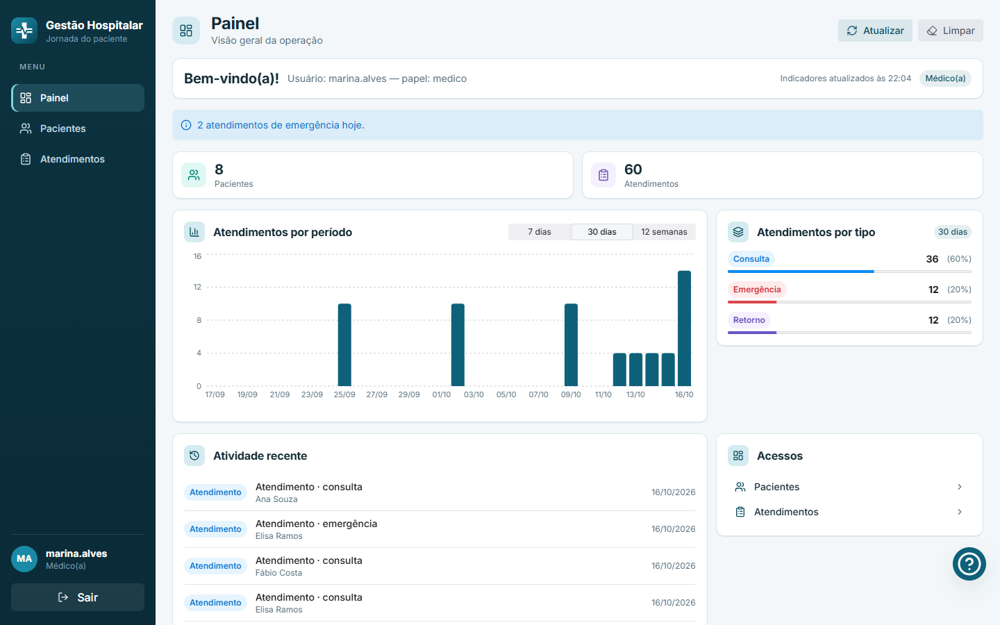
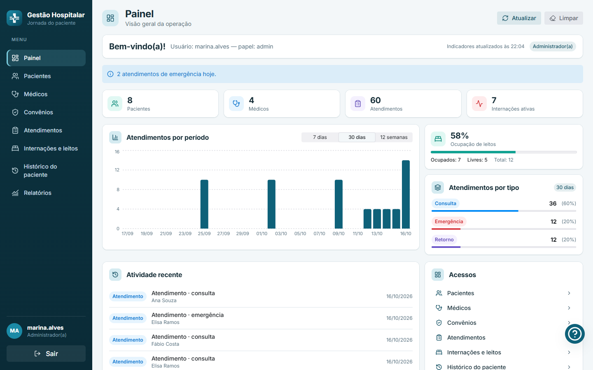
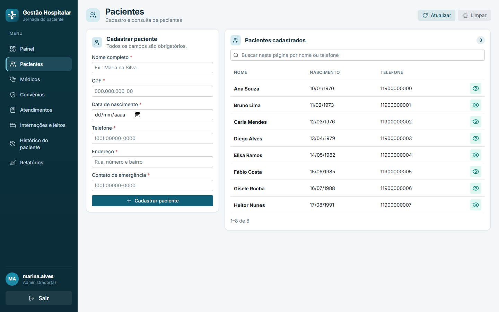
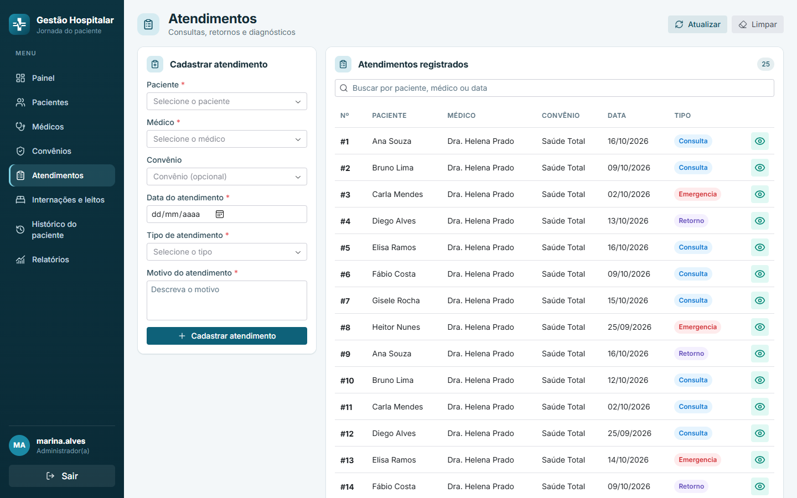
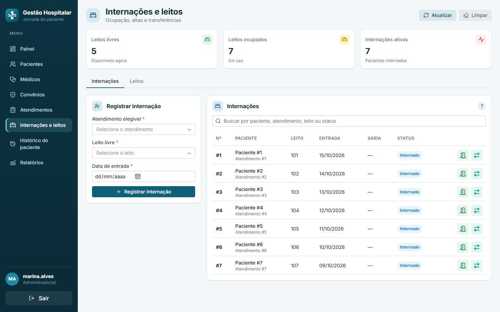
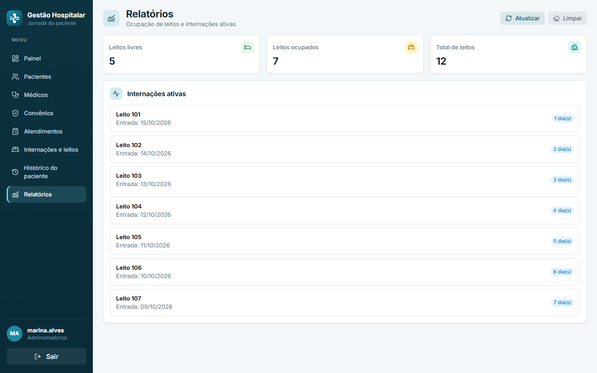
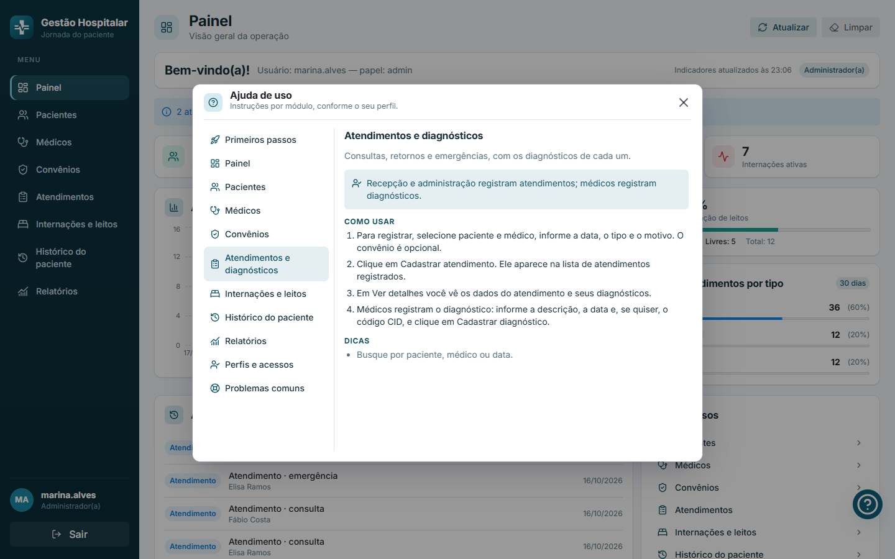
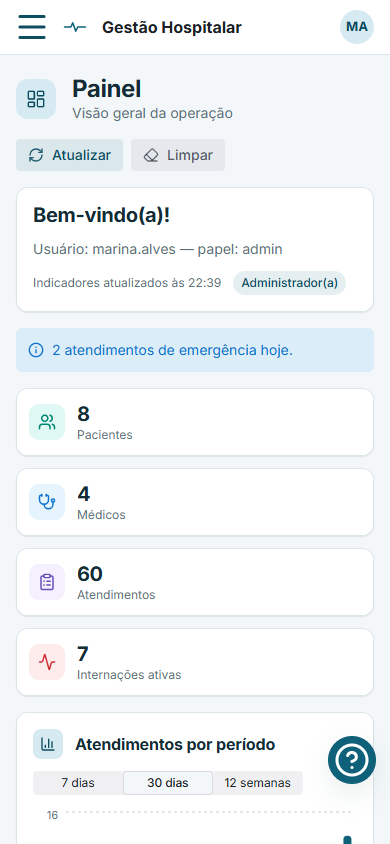
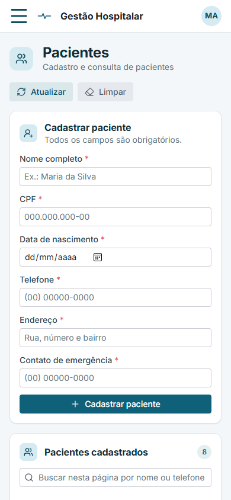

Pacientes, atendimentos, internações, leitos e histórico, com acesso por perfil e dados sempre atualizados.
Reflex + Xano•Dados das telas: fictícios
Contexto
O histórico do paciente não pode ficar espalhado
Atendimentos, diagnósticos, internações e transferências costumam viver em lugares diferentes. Fica difícil acompanhar a evolução do paciente e controlar a ocupação de leitos.
O problema
Informação dispersa, sem uma visão única do paciente e da operação do hospital.
O objetivo
Centralizar a jornada: cadastro, atendimento, internação, transferência e histórico rastreável.
O resultado
Equipes certas vendo as informações certas, com regras de negócio aplicadas no servidor.
Visão geral
A jornada do paciente, passo a passo
Cadastro
Paciente, médico e convênio
Atendimento
Consulta, retorno ou emergência
Diagnóstico
Descrição e código CID
Internação
Leito livre e data de entrada
Transferência
Setor de destino e motivo
Histórico
Linha do tempo completa
Alta: a internação é encerrada, o leito volta a ficar livre e o histórico continua consultável.
Segurança e acesso
Cada perfil vê só o que precisa
Recepção
Pacientes, médicos, convênios e atendimentos.
Médico
Consulta pacientes e atendimentos; registra diagnósticos.
Enfermagem e gestão
Internações, leitos, transferências, histórico e relatórios.
Administrador
Acesso a todos os módulos.
Menu e painel se adaptam ao perfil.
Permissões também no servidor (Xano): esconder uma tela não é a única proteção.

Perfil médico: só Painel, Pacientes e Atendimentos no menu.
Painel
A operação do hospital num relance
Indicadores de pacientes, médicos, atendimentos e internações.
Atendimentos por período: 7 dias, 30 dias ou 12 semanas.
Ocupação de leitos com alerta de cor (âmbar a 75%, vermelho a 90%).
Atividade recente e avisos de emergências do dia.

Dados fictícios. Os gráficos carregam em segundo plano, sem travar a navegação.
Cadastros
Pacientes, médicos e convênios com regras claras
CPF e CRM validados e únicos.
Campos obrigatórios conferidos antes de salvar.
Busca na lista, detalhes por registro e paginação.
Editar e excluir (médico sem atendimentos vinculados).

Cadastro de pacientes (dados fictícios).
Atendimentos
Do primeiro contato ao diagnóstico
Vínculo entre paciente, médico e convênio (opcional).
Tipos: consulta, retorno e emergência.
Detalhes do atendimento com os diagnósticos e o código CID.
Médicos registram o diagnóstico; a recepção registra o atendimento.

Atendimentos registrados (dados fictícios).
Internações e leitos
Ocupação, alta e transferência sob controle
Um leito só pode ter um paciente por vez.
Registrar alta libera o leito na hora.
Transferência com data, setor de destino e motivo.
Internação encerrada não aceita novas transferências.

Internações e leitos (dados fictícios).
Acompanhamento
Histórico do paciente e relatório de ocupação
Histórico: linha do tempo com atendimentos, diagnósticos, internações e transferências.
Relatório: total de leitos, ocupados, livres e internações ativas.
Pensado para enfermagem e gestão acompanharem a operação.

Relatório de ocupação (dados fictícios).
Novo
Ajuda de uso dentro do sistema
Botão de ajuda no painel abre um modal, sem sair da tela.
Instruções por módulo, só dos módulos do seu perfil.
Passos, dicas e solução de problemas comuns.
Acessível pelo teclado; Esc fecha.

Ajuda de uso (módulo Atendimentos e diagnósticos).
Qualquer tela
Do celular ao monitor grande
Menu lateral que se recolhe em telas médias e vira gaveta no celular.
Tabelas, formulários e gráficos se reorganizam.
Cartões compactos, pouco espaço em branco e feedback em cada ação: carregando, aviso de sucesso ou erro.

Painel no celular

Pacientes no celular
Confiabilidade
Leitura que aguenta um Xano lento
Nos logs, o serviço remoto limitou requisições (HTTP 429) em rajadas e chegou a demorar mais de 5 s para responder. Antes, uma falha virava erro na tela, às vezes de forma persistente.
1ª tentativa429 · limite
0,5 s
2ª tentativa429 · limite
1 s
3ª tentativa200 · dados na tela
Repetição automática
Só leituras (GET), com espera crescente e respeito ao Retry-After; um 429 pausa todas as requisições. Escritas nunca se repetem.
Menos rajadas
Conexão reaproveitada, no máximo 3 requisições simultâneas e limite por janela abaixo da cota do Xano.
Resposta clara
Botão Tentar novamente na falha; sessão expirada avisa e leva ao login.
Arquitetura
Python de ponta a ponta, backend remoto
Navegador
Interface compilada pelo Reflex
eventos
Reflex (Python)
Telas, estado, validações e regras de autorização
API HTTPS
Xano
Persistência e permissões por perfil
Frontend e backend na mesma base Python; nenhuma outra tecnologia de interface.
Sem banco local: a persistência é exclusivamente a API do Xano.
Logs sem senhas, tokens ou dados do paciente.
Qualidade
Mudanças pequenas, especificadas e testadas
Testes
automatizados rodando a cada mudança
5
etapas por mudança: Explorar, Propor, Revisar, Aplicar, Arquivar
2
camadas de proteção: interface e servidor
4
perfis conferidos no navegador, em telas pequena e grande
Cada mudança vira uma especificação (OpenSpec) com cenários verificáveis.
Revisão técnica a cada bloco: redundâncias, código morto e inconsistências.
Teste visual em telas pequena e grande e com os quatro perfis.
Próximos passos
O que vem a seguir
Portabilidade
Estudo de formas de levar o app para o time testar com facilidade: contêiner, pacote portátil ou instância compartilhada.
Em estudo
Busca no servidor
Hoje a busca vale para a página aberta; levar o filtro para o Xano.
Backlog
Relatórios
Mais recortes de ocupação e de atendimentos, por médico e por convênio.
Backlog
Fora do escopo atual: faturamento, prescrição, agenda de consultas e integração com sistemas externos.
Obrigado
Perguntas?
Gestão Hospitalar — a jornada do paciente, do cadastro à alta.
Reflex + Xano•Capturas com dados fictícios
Gestão Hospitalar
← → navegar · F tela cheia · Home/End · P imprimir (PDF)